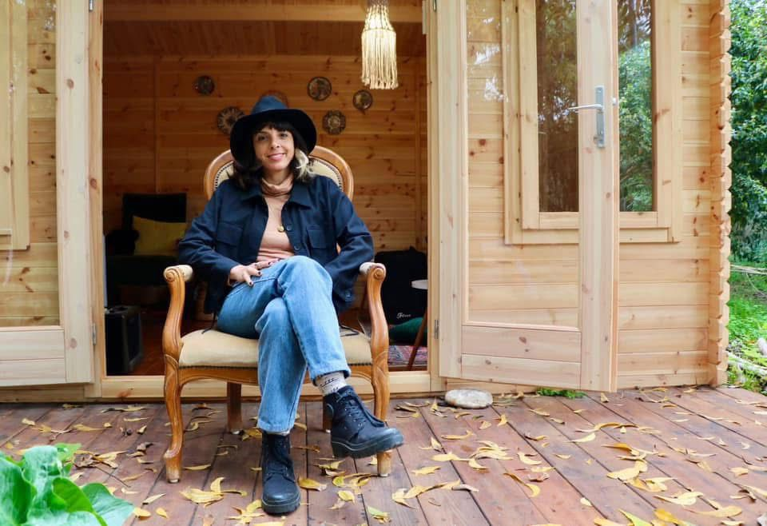
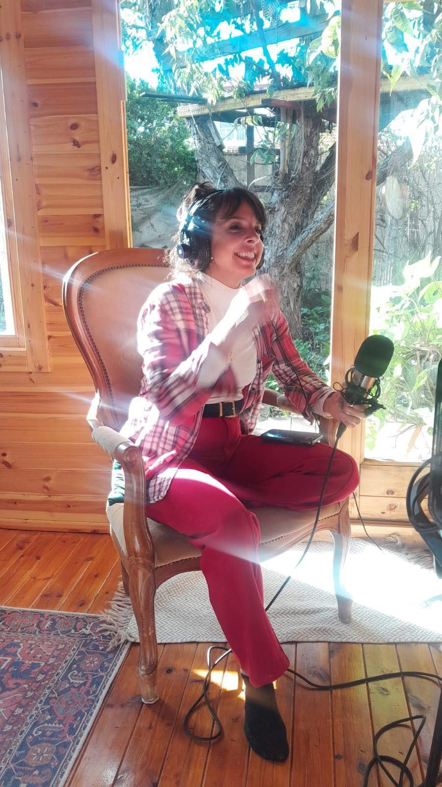

מנחת קבוצות | תרפיסטית מוסמכת M.A. אוניברסיטת חיפה | זמרת יוצרת
מנחה תהליכים קבוצתיים ואישיים המשלבים קול, יצירה, תנועה ואימפרוביזציה, מתוך אמונה בכוחם של הביטוי והיצירה לפתוח אפשרויות חדשות, לחבר פנימה והחוצה וליצור שינוי.
אני מביאה אל המרחב הקבוצתי ניסיון מקצועי מעולם הטיפול לצד שנים של יצירה, במה והנחיה, ומזמינה אנשים לפגוש את עצמם דרך הקול, הגוף, הפרפורמנס והיצירה.
מאלתרת את החיים למחייתי.

